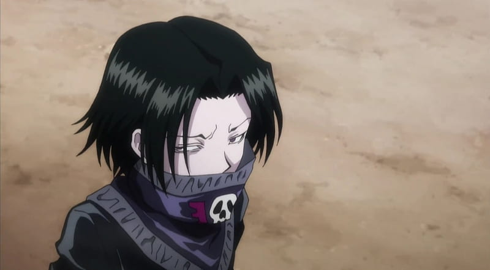

Feitan
Feitan Portor, a prominent member of the Phantom Troupe, is a mysterious and deadly fighter known for his sadistic tendencies and mastery of Nen. His ability, Pain Packer, allows him to transform the pain he endures into devastating attacks, with his most fearsome technique, Rising Sun, creating a miniature sun that incinerates his enemies. Feitan’s small stature and quiet demeanor often mask his immense speed, precision, and ruthlessness in battle. While Feitan and Hisoka, another Troupe member, have never officially fought in the series, their potential clash is a topic of great interest among fans. Both are incredibly skilled and unpredictable combatants, with Hisoka’s Bungee Gum and Texture Surprise contrasting Feitan’s pain-based abilities. A fight between them would likely be a high-stakes, fast-paced duel of wits and power, showcasing their unique strengths and unrelenting desire for victory. Their contrasting personalities—Feitan’s cold efficiency versus Hisoka’s flamboyant chaos—would make such a confrontation unforgettable.
